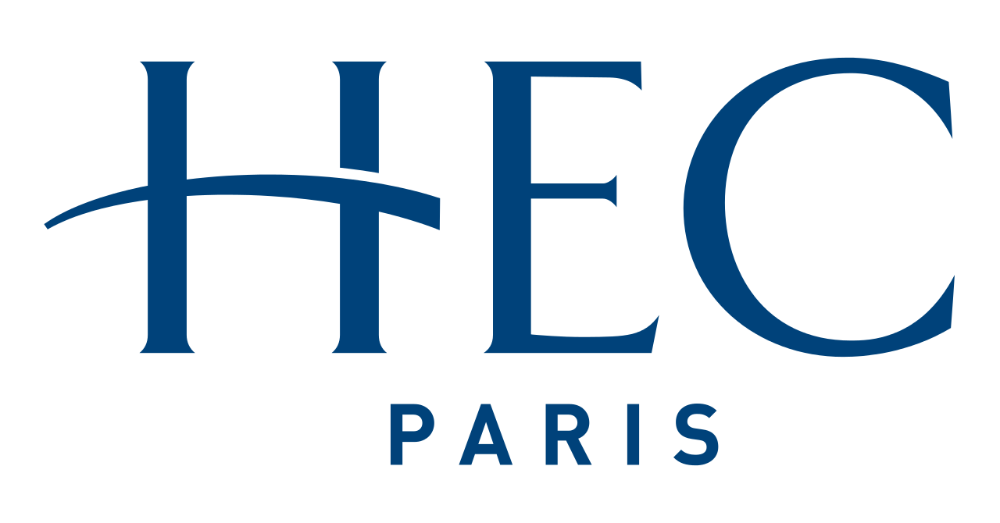

I am Adrià Termes a 22 year old who recently graduated from the Bachelor in Business Administration and that will do a Master of Science in Business Analytics at ESADE Business school. I love teaching and I am currently preparing for the aforementioned master, so this page is the result of that practice by showing my professional projects from scratch. Just to keep things clear, I put a link to my previuous blog, upon which I am building this idea. I hope you like it😊.
This program has been my professional foundation. From good to bad moments, I can describe who I have becomed from all the experiences. The program has enabled me to travel from Paris to London, and to really have a wide perspective on the cultural differences and how to manage them, apart from all the hard skills.
Picture this: in the middle of the Covid-19 pandemic, I land my first job as an intern in a digital marketing department in a French startup located in Barcelona named Papernest . A topic that is not a 100% familiar to me, and with teammates that are all French (I did not know French neither). Without a doubt, something worth telling and that is fun to remember.
Looking for big challenges, I landed a Marketing internship at Amplifon. The situation in there twisted till the point that I found myself with the direction of the marketing operations for the implants department in Spain for approximately 2 months. Fortunately, my teammates were like family and helped, but I can assure that being an intern and dealing with that is not that easy😂.